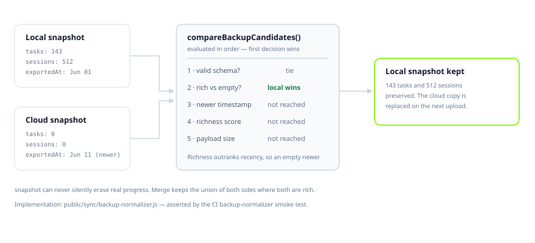

Sync & backup
Your study data lives on your device first and replicates to your own Supabase project. This page covers how sync decides what wins, and how to take a full backup you can restore into any project.
The guarantee A snapshot containing real study data will never be replaced by an empty one, even when the empty snapshot is newer. This is asserted by a test that runs on every CI build, because it is the one failure mode that destroys work irreversibly.
Storage model #
Data exists in three places, and it is worth knowing which is which — they have different lifetimes and are cleared by different actions.
isotope_mainisotope_*_v2isotope-auth-token, sb-<ref>-auth-token, isotope-last-jwt, isotope-last-rt. Your session.backup_manifests.Clearing the cache does not sign you out
caches.delete() only removes HTTP responses — the cached copies of
/assets/*.js. It cannot reach localStorage or IndexedDB, so your session
and your study data are untouched. This is why the app's automatic recovery from a
stale bundle is safe.
Conflict resolution #
The hard case is not two edits to the same task. It is a fresh install producing an empty snapshot that is, by timestamp, newer than years of real work. Last-write-wins would destroy the data. So richness is evaluated before recency.

The comparison ladder #
compareBackupCandidates() in
public/sync/backup-normalizer.js returns 1,
-1 or 0. The first rule that separates the two candidates
decides the outcome:
| # | Test | Rationale |
|---|---|---|
| 1 | Present and valid | A parseable snapshot beats a missing or malformed one. |
| 2 | Rich beats empty | The rule that protects real work. Decides the fresh-install case. |
| 3 | Rich beats not-rich | Handles partial snapshots that are not fully empty. |
| 4 | Newer timestamp | Only consulted once both sides are comparably substantial. |
| 5 | Higher richness score | Weighted count across collections. |
| 6 | Larger payload | Final tie-break. |
What counts as rich #
Two definitions, and both are deliberately conservative:
// Rich: any meaningful collection has at least one row …
function isCountsRich(counts, sizeBytes = 0) {
if (RICH_COLLECTION_KEYS.some((key) => Number(counts[key] || 0) > 0)) return true;
// … or the payload is substantial and not entirely empty
const realCollectionCount = ARRAY_COLLECTION_KEYS
.reduce((sum, key) => sum + Number(counts[key] || 0), 0);
return sizeBytes > 100 * 1024 && realCollectionCount > 0;
}
// Empty: every array collection is zero AND there is no timer state
function isCountsEmpty(counts) {
return ARRAY_COLLECTION_KEYS.every((key) => Number(counts[key] || 0) === 0)
&& Number(counts.timerState || 0) === 0;
}
The tracked collections are tasks, sessions,
subjects, habits, dailyLogs,
tests, exams and mockTests, plus
profile and timerState.
Which timestamp is used #
Snapshots come from several sources with different field names, so
candidateTime() takes the maximum of every plausible field rather than
trusting one:
Math.max( meaningfulTimestamp(candidate.meaningful_data_at), meaningfulTimestamp(candidate.exported_at), meaningfulTimestamp(candidate.updated_at), meaningfulTimestamp(candidate.created_at), )
meaningfulTimestamp discards zero and epoch-adjacent values, so a
missing date cannot masquerade as 1970 and win a comparison by accident.
Merging #
When both sides are rich, mergeBackupData() keeps the union rather than
picking a winner. Rows are matched by id, and the higher version wins per
row. Nothing present on either side is dropped.
Per-row sync #
Community and stats tables sync per row rather than as a bundle, using four columns present on six tables:
When sync runs #
| Trigger | Delay | Notes |
|---|---|---|
| Startup | 8s | After session hydration, so the JWT is valid. |
| Local data changed | 15s debounce | Coalesces a burst of edits into one upload. |
| Tab became visible | 2s | Only if the tab was hidden for a meaningful interval. |
| Network came back | 3s | Re-validates the session first rather than blindly retrying. |
| Periodic | every 5 min | Visible tabs only. |
A minimum 60-second interval is enforced between runs, so no combination of triggers can produce a request storm.
Auth-blocked state If the JWT cannot be refreshed, sync enters an auth-blocked state and stops retrying. Retrying an upload with a dead token cannot succeed and would only burn requests. Recovery happens when a valid session is obtained, not on a timer.
Full backup #
backup.sh captures the schema, every table, auth users and storage
objects into a single verified tarball.
# full backup, auto-verified against the source project ./backup.sh backup # database only, skip storage ./backup.sh backup --no-storage # keep only the 5 most recent tarballs ./backup.sh backup --keep 5
Four stages run in order:
Schema dump
Via the Management API into
sql/isotope-schema-restore.sql— tables, functions, policies, triggers and indexes.Data, auth users and storage
Every table to JSONL, plus auth users and every discovered storage bucket.
Pack and checksum
tar -czf, thengzip -tfor integrity, then a.sha256sidecar.Verify against source
Row counts, auth user count and storage object counts are compared back to the live project. A mismatch fails loudly.
Inspecting a backup #
./backup.sh info backups/isotope-backup-20260827-233852.tar.gz
Reports checksum match, gzip integrity, the file list, and a manifest summary with table count, total rows, auth users and storage size.
Restore #
Restore targets any project, including a brand new one — this is how you migrate.
./backup.sh restore backups/isotope-backup-20260827-233852.tar.gz \ --supabase-url=https://new-project.supabase.co \ --anon-key=<anon> \ --service-key=<service_role> \ --pat=<management-api-token>
The ordering here is deliberate. Verification runs before anything local is touched:
Extract and validate
Refuses to proceed without a
manifest.json.Apply schema, data and storage
Tables are inserted in foreign-key order from
fk_orderin the manifest.Verify against the target
Counts must match. On mismatch the run aborts and keeps the extracted directory for inspection.
Scaffold
.envOnly after verification passes. The previous
.envis copied aside first, and non-project keys are carried over.Restart the server
The app comes back pointed at the restored project.
Restore overwrites the target Rows in the target project are replaced by rows from the tarball. Take a backup of the target first if it contains anything you need. Verification protects you from a partial restore, not from an intentional one.
Key precedence #
Backup and restore resolve credentials in this order:
CLI arguments → .backup_env → .env
Inherited shell environment is deliberately discarded. A shell that has sourced
.env for another project would otherwise silently redirect a backup to the
wrong database — a mistake that is invisible until you try to restore.
Verifying sync works #
# end-to-end sync against a running server npm run test:supabase-sync # prove a fresh browser can restore an existing account npm run backup:prove-restore # validate local backup files npm run backup:validate
Admin mode also exposes /__admin/sync, a console showing the best
available backup per user with a dry-run repair.